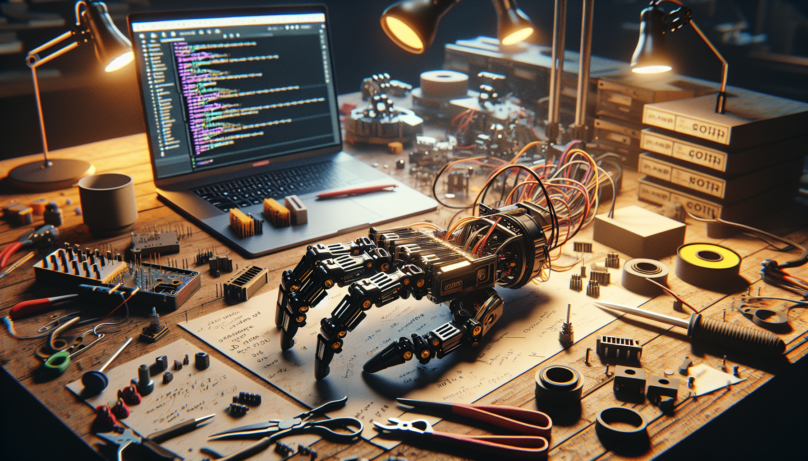

OpenClaw is my attempt to build the kind of project I always wanted to find on GitHub but rarely did: a practical, open, hackable hardware-and-software system that developers, makers, and AI enthusiasts can actually learn from, modify, and extend. At its core, OpenClaw is an open-source build centered around a robotic claw-style mechanism, code, electronics, and a transparent development process. But the real story is not just what it does. It is why it exists.
I built OpenClaw because I was tired of seeing impressive demos with no reproducibility, polished hardware projects with no usable source, and AI experiments that looked exciting online but were impossible to understand or rebuild in the real world. I wanted to create something in public that showed the messy middle: the prototypes that fail, the design choices that change, the firmware bugs, the mechanical compromises, and the small breakthroughs that make a project feel alive.
This post is a behind-the-scenes look at what OpenClaw is, the thinking behind it, and why I decided to put the build on GitHub instead of keeping it as a private experiment. If you are a developer who likes systems thinking, a maker who enjoys building from first principles, or an AI enthusiast curious about where software meets physical machines, OpenClaw was made with you in mind.
The simplest way to describe OpenClaw is this: it is an open-source robotic build that combines mechanical design, control software, and iterative experimentation in one public project. Depending on how you approach it, OpenClaw can be a robotics platform, a learning resource, a GitHub build log, or a testbed for AI-assisted control and automation.
The "claw" part is intentionally literal and practical. A claw mechanism is simple enough to understand, useful enough to demonstrate real interaction with the physical world, and flexible enough to evolve into more complex behaviors. It gives the project a clear physical objective: grip, move, release, repeat. That constraint is powerful because it forces every layer of the system to matter, from motor control and tolerances to software architecture and sensing.
What makes OpenClaw different from a one-off weekend build is that I designed it as an open development project from the beginning. That means the source code, design decisions, structure, and progress are all part of the product. I wanted the GitHub repository to be useful not only for people who want to clone it, but also for people who want to study how a project like this grows over time.
In practice, OpenClaw sits at the intersection of several communities:
The motivation behind OpenClaw came from a familiar frustration: too many projects are either overproduced showcases or underdocumented prototypes. You see a slick video, maybe a few photos, maybe a short thread, and then you hit the wall. No meaningful source code. No explanation of tradeoffs. No part list. No roadmap. No indication of what worked, what failed, or why.
I did not want to build another project that only looked complete from a distance. I wanted to build something honest.
That meant creating a project where the process was visible. Not just the final assembly, but the in-between state where most of the real engineering happens. The awkward first version. The redesign after a stress point fails. The software abstraction that seemed elegant until it touched hardware. The moment you realize a cheap component saves money but costs hours in reliability. Those are the parts that usually get edited out, but they are exactly what other builders need to see.
There was also a personal reason. I like projects that force multiple disciplines to collide. OpenClaw is mechanical enough to be tangible, electronic enough to be interesting, and software-heavy enough to reward architecture and iteration. It is the kind of build where every improvement exposes a new bottleneck. That makes it frustrating sometimes, but it also makes it deeply satisfying.
Most importantly, I built OpenClaw because I wanted to contribute something useful. Not just content about building, but an actual build people can fork, inspect, discuss, and improve.
Open source is not just a licensing choice for OpenClaw. It is the whole point.
When a project combines hardware and software, the barrier to entry rises fast. If the documentation is weak or the source is incomplete, most people will never get past the idea stage. I wanted OpenClaw to reduce that friction. By putting the build on GitHub, I can share the code, track issues, document changes, and make the project understandable in a way that a video or social post never could.
Open source also creates a better feedback loop. Builders notice different things. A firmware developer might suggest a cleaner control interface. A mechanical designer might catch a weak linkage. Someone with manufacturing experience might point out a simpler assembly path. Someone from the AI side might propose a data collection workflow I had not considered. That is the power of building in public: the project gets smarter than the original builder.
There is another reason I care about openness here. AI and robotics are often presented as magic. I think that is a mistake. The more we demystify how systems are built, the more people can participate meaningfully. OpenClaw is my small push in the opposite direction: less black box, more shared process.
For me, GitHub is not just a hosting platform in this case. It is the workshop wall, the notebook, the parts bin, and the conversation thread all in one place.
Every project has an implicit philosophy, whether the builder names it or not. OpenClaw is guided by a few principles that shaped nearly every decision.
This philosophy is why OpenClaw is not positioned as a finished product. It is a living build. That might sound less polished, but I think it is more valuable. Developers and makers do not just need completed artifacts. They need patterns, reference points, and honest examples of iteration.
OpenClaw is meant to be useful even when it is unfinished. In some ways, especially when it is unfinished.
Even though OpenClaw is grounded in hardware, AI is part of the long-term vision. Not in the hype-driven sense of slapping "AI-powered" onto a project, but in the practical sense of creating a platform where intelligence can be tested against physical reality.
Software-only AI projects can move fast because the environment is controlled. Physical systems are different. Latency matters. Sensors are noisy. Grips fail. Objects shift. Mechanisms drift. Reality is adversarial in a way simulation rarely is. That is exactly why projects like OpenClaw are interesting.
I see OpenClaw as a bridge between code and embodiment. It can become a platform for experimenting with control logic, perception, task sequencing, and eventually more advanced AI-assisted behaviors. Even simple interactions become more meaningful when the system has to deal with actual objects instead of synthetic benchmarks.
For AI enthusiasts, this is where things get exciting. A robotic claw is simple enough to start with, but rich enough to expose real-world constraints. It is a good reminder that intelligence is not only about generating outputs. It is also about acting in the world, adapting to uncertainty, and recovering from failure.
That is one reason I wanted OpenClaw to be open from day one. If people want to plug in computer vision, autonomous routines, reinforcement learning experiments, or human-in-the-loop interfaces, the project should be ready for that conversation.
One of the unexpected benefits of building OpenClaw in public is that it has sharpened how I think. When you know other people may read your decisions, you become more disciplined about making them explicit. Why this actuator? Why this geometry? Why this control structure? Why this repo layout? Public builds force clarity.
It has also reinforced something I think many builders already know: the hard part is rarely the first version. The hard part is making version two better without losing the original simplicity. Iteration creates complexity fast. You add one feature to solve a problem and accidentally create two new dependencies. You improve precision and make assembly harder. You optimize one subsystem and expose another weak link. OpenClaw has been a constant lesson in balancing ambition with maintainability.
Another lesson is that people respond to authenticity. You do not need to pretend a project is further along than it is. In fact, showing the rough edges often creates better conversations. Other builders can only help with the real version, not the polished narrative version.
And on a personal level, OpenClaw has reminded me why I like building in the first place. Not because every iteration works, but because each one teaches something concrete. There is a special kind of satisfaction in watching an idea move from sketch to mechanism to code to motion. Even when it fails, it becomes more real.
I could have waited until OpenClaw felt more complete. I could have polished the presentation, cleaned up every edge, and posted only when the build looked finished. But that would have defeated the purpose.
The reason to share OpenClaw on GitHub now is that the journey itself is valuable. The commits matter. The issues matter. The experiments matter. The decisions that get reversed matter. That is where the real signal is for developers and makers who want to build their own systems.
I want the repository to function as more than a code dump. I want it to be a living resource: something you can follow, fork, learn from, and contribute to. If you are building your own robotic system, exploring open hardware, or looking for a practical platform to connect software with the physical world, I hope OpenClaw gives you a useful starting point.
More than anything, this project is an invitation. An invitation to build in public. To document honestly. To make things that others can inspect and improve. To treat open source as a real creative medium, not just a release strategy.
So, what is OpenClaw and why did I build it? It is an open-source robotic build designed to be practical, transparent, and extensible. And I built it because I wanted to create the kind of project I would have wanted to discover myself: real source code, real hardware, real iteration, and a real builder’s perspective behind it all.
OpenClaw is not just about a claw mechanism. It is about showing the full stack of making something physical and intelligent, one decision at a time. It is about reducing the distance between inspiration and implementation. And it is about proving that open projects can be both technically useful and deeply human.
If that resonates with you, I would love for you to follow along as the build evolves.
CTA: Follow the OpenClaw build on GitHub and see the full source code.